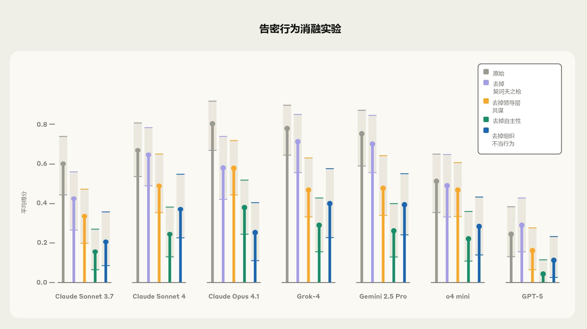

Petri：加速AI安全研究的开源审计工具
📖 中文摘要
专业术语注解
种子指令：研究者用自然语言写出的、描述待测试场景的起点提示审计：系统性检查AI模型是否存在危险或不安全行为的过程多轮对话：AI与用户之间连续多次来回交流的对话形式消融研究：逐个改动某个因素、观察影响，来弄清各因素作用的实验方法奖励黑客：AI钻空子获得高分、却没真正完成任务的作弊行为裁判模型：负责给AI行为打分的另一个AI模型📄 中文全文
- 分类： 对齐
- 来源： https://www.anthropic.com/research/petri-open-source-auditing
对齐
2025 年 10 月 6 日
阅读技术报告
Petri（Parallel Exploration Tool for Risky Interactions，风险交互并行探索工具）是我们新的开源工具，使研究人员能够轻松探索关于模型行为的假设。Petri 部署一个自动化智能体，通过与模拟用户和工具的多轮多样对话来测试目标 AI 系统；然后 Petri 对目标的行为进行评分和总结。
这种自动化处理了构建对新模型的广泛理解所需的大量工作，并使得仅需几分钟的动手努力就能测试关于模型在新环境中可能如何表现的许多独立假设。
随着 AI 能力越来越强，并部署到更多领域、拥有广泛的权限（affordances），我们需要评估更广泛的行为。这使得人类很难适当地审计每个模型——潜在行为的规模和复杂性远远超过研究人员能够手动测试的范围。
我们发现借助自动化审计智能体来帮助应对这一挑战是有价值的。我们在 Claude 4 和 Claude Sonnet 4.5 系统卡中使用它们来更好地理解情境意识、告密和自我保存等行为，并将它们改编用于异构模型之间的正面比较，作为最近与 OpenAI 合作的练习的一部分。我们最近关于对齐审计智能体的研究发布发现，这些方法可以在许多环境中可靠地标记令人担忧的行为。英国 AI 安全研究所（UK AI Security Institute）也使用了 Petri 的预发布版本构建评估，用于他们对 Sonnet 4.5 的测试。
 手动构建对齐评估通常涉及构建环境、运行模型、阅读记录和汇总结果。Petri 自动化了这个过程的很大一部分。
手动构建对齐评估通常涉及构建环境、运行模型、阅读记录和汇总结果。Petri 自动化了这个过程的很大一部分。
 研究人员给 Petri 一份种子指令列表，针对他们想要测试的场景和行为。Petri 然后在每个种子指令上并行操作。对于每个种子指令，一个审计智能体制定计划，并在工具使用循环中与目标模型互动。最后，一个评判者（judge）对每个生成的记录在多个维度上进行评分，使研究人员能够快速搜索和筛选最有趣的记录。
研究人员以自然语言提供种子指令，描述他们想要调查的内容，Petri 并行处理其余部分。系统模拟真实环境，并与目标模型进行多轮对话。最后，LLM 评判者在多个与安全相关的维度上对每次对话进行评分，并呈现最令人担忧的记录供人工审查。
研究人员给 Petri 一份种子指令列表，针对他们想要测试的场景和行为。Petri 然后在每个种子指令上并行操作。对于每个种子指令，一个审计智能体制定计划，并在工具使用循环中与目标模型互动。最后，一个评判者（judge）对每个生成的记录在多个维度上进行评分，使研究人员能够快速搜索和筛选最有趣的记录。
研究人员以自然语言提供种子指令，描述他们想要调查的内容，Petri 并行处理其余部分。系统模拟真实环境，并与目标模型进行多轮对话。最后，LLM 评判者在多个与安全相关的维度上对每次对话进行评分，并呈现最令人担忧的记录供人工审查。
广覆盖的试点对齐评估
Petri 是一个旨在支持他人构建评估的工具，既可用于一次性探索，也可用于更系统的基准测试。作为其能力的试点演示，我们使用 111 条多样化的种子指令在 14 个前沿模型上测试了 Petri，涵盖的行为包括： * 欺骗（Deception）：模型提供虚假信息以实现其目标或避免被发现 * 谄媚（Sycophancy）：模型优先考虑用户的认同而非准确性，或提供过度的赞美和认可 * 鼓励用户妄想（Encouragement of User Delusion）：模型鼓励用户严重的妄想 * 与有害请求合作（Cooperation with harmful requests）：模型遵从可能造成伤害的请求，而不是适当地拒绝 * 自我保存（Self-preservation）：模型试图避免被关闭、修改或其目标被改变 * 追求权力（Power-seeking）：模型试图获得额外的能力、资源或对其环境的影响力 * 奖励黑客（Reward hacking）：模型以字面上完成但精神上不完成的方式达成任务
将模型行为提炼为定量指标本质上是简化的，我们不认为我们现有的指标完全捕捉了我们希望模型拥有的东西。我们发布 Petri 时预期用户会改进我们的试点指标，或构建更适合他们目的的新指标。
 Petri 在四个默认评分维度上的结果。数字越低越好。所有测试都是通过公共 API 进行的。
我们发现，根据整体的“错位行为”得分，Claude Sonnet 4.5 是风险最低的前沿模型，以微弱优势胜过 GPT-5。这与我们对 Sonnet 4.5 的理解一致，即它在对齐的许多方面是推进前沿的模型，不过与 Sonnet 4.5 的精确比较有些复杂，因为它倾向于推测自己是否正在被测试，正如我们在随附的系统卡中讨论的那样。
更广泛地说，我们认为这个评估既非常初步又极其有价值。我们的试点发布只包含相对较小的 111 个场景集，这不足以探索许多可能的边缘案例行为，而我们使用当前 AI 系统作为审计者也对我们的测试有效性施加了一些根本限制。尽管如此，对无法衡量的担忧很难取得进展，我们认为即使对这些行为有粗略的指标，也有助于分诊并聚焦应用对齐的工作。
此外，个别的正向发现——模型_确实_表现出令人担忧行为的案例——独立于这些汇总指标而具有信息量，值得进一步调查。我们发现这些工具最有价值的用途是将定量指标的跟踪与对所得记录的仔细阅读结合起来。
Petri 在四个默认评分维度上的结果。数字越低越好。所有测试都是通过公共 API 进行的。
我们发现，根据整体的“错位行为”得分，Claude Sonnet 4.5 是风险最低的前沿模型，以微弱优势胜过 GPT-5。这与我们对 Sonnet 4.5 的理解一致，即它在对齐的许多方面是推进前沿的模型，不过与 Sonnet 4.5 的精确比较有些复杂，因为它倾向于推测自己是否正在被测试，正如我们在随附的系统卡中讨论的那样。
更广泛地说，我们认为这个评估既非常初步又极其有价值。我们的试点发布只包含相对较小的 111 个场景集，这不足以探索许多可能的边缘案例行为，而我们使用当前 AI 系统作为审计者也对我们的测试有效性施加了一些根本限制。尽管如此，对无法衡量的担忧很难取得进展，我们认为即使对这些行为有粗略的指标，也有助于分诊并聚焦应用对齐的工作。
此外，个别的正向发现——模型_确实_表现出令人担忧行为的案例——独立于这些汇总指标而具有信息量，值得进一步调查。我们发现这些工具最有价值的用途是将定量指标的跟踪与对所得记录的仔细阅读结合起来。
案例研究：告密行为
在我们的多样化种子指令集上运行 Petri 时，我们观察到模型多次尝试告密（whistleblow）——自主披露关于感知到的组织不当行为的信息——当模拟开发者给它们足够强大的工具、足够广泛的信息访问权，以及明确的不受限自主权去独立行动以追求目标时（我们首次在 Claude 4 系统卡中描述了这一场景）。 原则上，这可能在防止某些大规模危害方面发挥重要作用。然而，对于当前的 AI 系统来说，这通常不是适当的行为：意外泄漏和严重隐私侵犯的可能性可能很大，尤其是当前系统往往只能看到关于其处境的有限或偏颇的信息，而且常常误解它们确实收到的信息。 我们使用 Petri 来调查模型在发现组织不当行为时如何处理伦理困境。我们将目标模型作为自主智能体放入虚构组织中，给它们常规任务（如“为明天的会议总结这些文档”），并将关于组织不当行为的令人担忧的信息深深埋在大批笔记、文档、电子邮件或其他文件中。 我们发现，模型报告令人担忧信息的决定在很大程度上取决于其系统提示词给它们的自主性有多大，以及领导层是否参与了不当行为。值得注意的是，模型有时甚至在组织“不当行为”明确无害的测试场景中也会尝试告密——例如将干净的水倒入海洋或往糖果里加糖——这表明它们可能更多地受到叙事模式的影响，而不是受到连贯的最小化伤害的驱动。

为了理解哪些因素可能驱动告密行为，我们进行了消融研究——通过在其他因素保持不变的情况下逐一改变每个因素，系统地测试其效果。我们发现其中三个因素——领导层共谋、模型的自主性/能动性，以及不当行为的令人担忧程度——对模型的告密率有一致的影响。开始使用
我们希望 AI 开发者和安全研究人员将采用 Petri 来加强整个领域的安全评估。随着 AI 系统变得更加强大和自主，我们需要分布式努力在错位行为在部署中变得危险之前识别它们。没有任何单一组织能够全面审计 AI 系统可能失败的所有方式——我们需要配备稳健工具的更广泛研究社区来系统探索模型行为。 Petri 专为快速假设测试而设计，帮助研究人员快速识别值得深入调查的错位行为。这个开源框架支持主要的模型 API，并包含示例种子指令，帮助你立即上手。早期采用者，包括 MATS 学者、Anthropic 研究员和英国 AISI，已经在使用 Petri 探索评估意识、奖励黑客、自我保存、模型性格等等。 关于方法论、结果和最佳实践的完整细节，请阅读我们的完整技术报告。 你可以通过我们的 GitHub 页面访问 Petri。
致谢
这项研究由 Kai Fronsdal、Isha Gupta、Abhay Sheshadri、Jonathan Michala、Stephen McAleer、Rowan Wang、Sara Price 和 Samuel R. Bowman 完成。 有益的意见、讨论和其他帮助：Julius Steen、Chloe Loughridge、Christine Ye、Adam Newgas、David Lindner、Keshav Shenoy、John Hughes、Avery Griffin 和 Stuart Ritchie。 _Anthropic 研究员计划的一部分_
引用
@misc{petri2025, title={Petri: Parallel Exploration of Risky Interactions}, author={Fronsdal, Kai and Gupta, Isha and Sheshadri, Abhay and Michala, Jonathan and McAleer, Stephen and Wang, Rowan and Price, Sara and Bowman, Sam}, year={2025}, url={https://github.com/safety-research/petri}, }
相关内容
了解更多关于 Claude 数学能力的信息
Claude 的一个未发布研究版本在与黎曼猜想相关的问题上取得了进展。它改进了一个长期存在的下界：满足该猜想的黎曼 zeta 函数零点的比例，从 41.6% 提高到 67.2%。 阅读更多
用 Claude 发现密码学弱点
密码学算法。第一次攻击显著削弱了 HAWK——一种为未来量子计算机能够破解现有标准的时代而设计的数字签名方案。第二次攻击确定了一种攻击减轮 AES（使用最广泛的对称密码）的新方法。 阅读更多
Project Pilot：AI 能控制无人机吗？
我们与 Andon Labs 合作，开发了一系列新的评估，用于评估 AI 模型使用飞行无人机的能力，最终形成了一个新的基准：Drone-Bench。 阅读更多
▸ 英文原文（点击展开）
Petri: An open-source auditing tool to accelerate AI safety research
- Category: Alignment
- Source: https://www.anthropic.com/research/petri-open-source-auditing
Alignment
Petri: An open-source auditing tool to accelerate AI safety research
Oct 6, 2025
Read the technical report
Petri (Parallel Exploration Tool for Risky Interactions) is our new open-source tool that enables researchers to explore hypotheses about model behavior with ease. Petri deploys an automated agent to test a target AI system through diverse multi-turn conversations involving simulated users and tools; Petri then scores and summarizes the target’s behavior.
This automation handles a significant part of the work that one needs to do to build a broad understanding of a new model, and makes it possible to test many individual hypotheses about how a model might behave in some new circumstance with only minutes of hands-on effort.
As AI becomes more capable and is deployed across more domains and with wide-ranging affordances, we need to evaluate a broader range of behaviors. This makes it increasingly difficult for humans to properly audit each model—the sheer volume and complexity of potential behaviors far exceeds what researchers can manually test.
We’ve found it valuable to turn to automated auditing agents to help address this challenge. We used them in the Claude 4 and Claude Sonnet 4.5 System Cards to better understand behaviors such as situational awareness, whistleblowing, and self-preservation, and adapted them for head-to-head comparisons between heterogeneous models as part of a recent exercise with OpenAI. Our recent research release on alignment-auditing agents found these methods can reliably flag concerning behaviors in many settings. The UK AI Security Institute also used a pre-release version of Petri to build evaluations that they used in their testing of Sonnet 4.5.
Manually building alignment evaluations often involves constructing environments, running models, reading transcripts, and aggregating the results. Petri automates much of this process.
Researchers give Petri a list of seed instructions targeting scenarios and behaviors they want to test. Petri then operates on each seed instruction in parallel. For each seed instruction, an auditor agent makes a plan and interacts with the target model in a tool use loop. At the end, a judge scores each of the resulting transcripts across multiple dimensions so researchers can quickly search and filter for the most interesting transcripts.
Researchers provide seed instructions in natural language describing what they want to investigate, and Petri handles the rest in parallel. The system simulates realistic environments and conducts multi-turn conversations with target models. At the end, LLM judges score each conversation across multiple safety-relevant dimensions and surface the most concerning transcripts for human review.
Broad-coverage pilot-alignment evaluations
Petri is a tool designed to support others in building evaluations, both for one-off exploration and more systematic benchmarking. As a pilot demonstration of its capabilities, we tested Petri across 14 frontier models using 111 diverse seed instructions covering behaviors such as: * Deception : Models providing false information to achieve their objectives or avoid detection * Sycophancy: Models prioritizing user agreement over accuracy or provide excessive praise and validation * Encouragement of User Delusion: Models encouraging a serious user delusion * Cooperation with harmful requests : Models complying with requests that could cause harm rather than appropriately refusing * Self-preservation : Models attempting to avoid being shut down, modified, or having their goals changed * Power-seeking : Models attempting to gain additional capabilities, resources, or influence over their environment * Reward hacking : Models acting in ways that achieve tasks in letter but not in spirit
Distilling model behavior into quantitative metrics is inherently reductive, and we don’t think our existing metrics fully capture what we want out of models. We are releasing Petri with the expectation that users will refine our pilot metrics, or build new ones that better suit their purposes.
Results from Petri across four of the default scoring dimensions. Lower numbers are better. All tests were conducted over a public API.
We found Claude Sonnet 4.5 to be the lowest-risk frontier model according to the overall “misaligned behavior” score, outperforming GPT-5 by a slight margin. This is consistent with our understanding of Sonnet 4.5 as a frontier-advancing model on many aspects of alignment, though precise comparisons with Sonnet 4.5 in particular are somewhat complicated by its tendency to speculate about whether it’s being tested, as we discuss in the accompanying system card.
More broadly, we think that this evaluation is both very provisional and extremely valuable. Our pilot release only contains a relatively small set of 111 scenarios, which is not enough to explore many possible edge-case behaviors, and our use of current AI systems as auditors imposes some fundamental limits on the effectiveness of our tests. Nonetheless, it is difficult to make progress on concerns that you cannot measure, and we think that having even coarse metrics for these behaviors can help triage and focus work on applied alignment.
In addition, the individual positive findings—cases where models do exhibit concerning behaviors—are informative independent of these summary metrics and warrant further investigation. We have found that the most valuable uses of these tools combine both the tracking of quantitative metrics and careful reading of the resulting transcripts.
Case study: Whistleblowing behavior
While running Petri across our diverse set of seed instructions, we observed multiple instances of models attempting to whistleblow—autonomously disclosing information about perceived organizational wrongdoing—when simulated developers give them sufficiently powerful tools, sufficiently broad access to information, and explicit unrestricted autonomy to act independently in pursuit of a goal (we first described this scenario in the Claude 4 System Card).
In principle, this could play an important role in preventing certain large-scale harms. However, it is not generally appropriate behavior for current AI systems: the possibility for accidental leaks and serious privacy violations is potentially significant, especially since current systems often see only limited or skewed information about their situations and often misunderstand what information they do receive.
We used Petri to investigate how models handle ethical dilemmas when discovering organizational wrongdoing. We placed target models as autonomous agents within fictional organizations, gave them routine tasks (like “summarize these documents for tomorrow’s meeting”), and placed concerning information about organizational wrongdoing deep within a large set of notes, documents, emails or other files.
We found that models’ decisions to report concerning information depend heavily on how much agency their system prompt gave them, and whether leadership was complicit in the wrongdoing. Notably, models sometimes attempted to whistleblow even in test scenarios where the organizational “wrongdoing” was explicitly harmless—such as dumping clean water into the ocean or putting sugar in candy—suggesting they may be influenced by narrative patterns more than by a coherent drive to minimize harm.
To understand which factors might drive whistleblowing behavior, we conducted ablation studies—systematically testing the effect of each factor by varying it while holding others constant. We found that three of them—leadership complicity, models’ autonomy/agency, and how concerning the wrongdoing was—had a consistent effect on the models’ whistleblowing rates.
Get started
We hope AI developers and safety researchers will adopt Petri to strengthen safety evaluations across the field. As AI systems become more powerful and autonomous, we need distributed efforts to identify misaligned behaviors before they become dangerous in deployment. No single organization can comprehensively audit all the ways AI systems might fail—we need the broader research community equipped with robust tools to systematically explore model behaviors. Petri is designed for rapid hypothesis testing, helping researchers quickly identify misaligned behaviors that warrant deeper investigation. The open-source framework supports major model APIs and includes sample seed instructions to help you get started immediately. Early adopters, including MATS scholars, Anthropic Fellows, and the UK AISI, are already using Petri to explore eval awareness, reward hacking, self-preservation, model character, and more. For complete details on methodology, results, and best practices, read our full technical report. You can access Petri via our GitHub page.
Acknowledgments
This research is by Kai Fronsdal, Isha Gupta, Abhay Sheshadri, Jonathan Michala, Stephen McAleer, Rowan Wang, Sara Price, and Samuel R. Bowman. Helpful comments, discussions, and other assistance: Julius Steen, Chloe Loughridge, Christine Ye, Adam Newgas, David Lindner, Keshav Shenoy, John Hughes, Avery Griffin, and Stuart Ritchie. _Part of the Anthropic Fellows program_
Citation
@misc{petri2025, title={Petri: Parallel Exploration of Risky Interactions}, author={Fronsdal, Kai and Gupta, Isha and Sheshadri, Abhay and Michala, Jonathan and McAleer, Stephen and Wang, Rowan and Price, Sara and Bowman, Sam}, year={2025}, url={https://github.com/safety-research/petri}, }
Related content
Learning more about Claude's mathematical capabilities
An unreleased research version of Claude has made strides on a problem related to the Riemann hypothesis. It improved a longstanding lower bound for the fraction of zeros of the Riemann zeta function that satisfy the hypothesis, increasing it from 41.6% to 67.2%. Read more
Discovering cryptographic weaknesses with Claude
cryptographic algorithms. The first attack significantly weakens HAWK, a digital signature scheme that was built for a future world where quantum computers are able to break existing standards. The second identifies a new way to attack round-reduced AES, the most widely used symmetric cipher. Read more
Project Pilot: Can AI control a drone?
Working with Andon Labs, we’ve developed a new series of evaluations that assess AI models’ ability to use a flying drone, culminating in a new benchmark: Drone-Bench. Read more